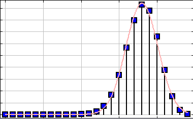
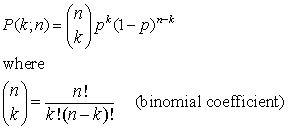
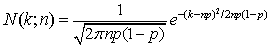

Outcomes after 24 trails with success probability p=0.75.
The Binomial Distribution model displays the probability of k successful outcomes (occurrences) after n trials each of which yields success with probability p. For non-negative integers n and k the binomial distribution is defined as

The binomial distribution is closely related to a normal distribution (Gaussian) and can be approximated by a continuous function N(k;n) if the number of trials is large.

The solid curve in the model's display shows the Gaussian approximation to the binominal distribution.
The following EJS models are described in Chapter 7 of the EJS adaptation of An Introduction to Computer Simulation Methods.
Additional models will be added to this chapter.
The Binomial Distribution model was created by Wolfgang Christian using the Easy Java Simulations (EJS) modeling tool version 4.2. You can examine and modify the model for this simulation if you have EJS installed by right-clicking within the program and selecting "Open Ejs Model" from the pop-up menu.
Information about EJS is available at: <http://www.um.es/fem/Ejs/> and in the OSP ComPADRE collection <http://www.compadre.org/OSP/>.